Stale
KIDs and fund pages go out of date and keep old costs and risk scores.
Espoo, Finland
Fund Anvil gives fund-shelf and product-governance teams at banks and fund platforms cited evidence on every fund they offer, from each fund’s own public documents.

The shelf
Most come from outside managers. Each fund carries a prospectus, a KID, an SFDR annex and periodic reports.
The bank’s problem
Its own criteria (exclusions, sustainability minimums, naming rules) are checked by hand, if at all.
“Nobody can say, from evidence, why each fund is on the shelf.”
The hidden problem
It surfaces only at marketing review, in distributor due diligence, or when the regulator asks.
KIDs and fund pages go out of date and keep old costs and risk scores.
Costs, risk scores and holdings differ between prospectus, KID, SFDR annex and reports.
The customer’s problem
Customers face ~600 choices with the same unclear facts.
The product
Disclosure Review checks whether a fund’s documents agree with each other.
Fund Examination
Six sections, with every fund compared side by side. Figures from the examination of one Finnish fund manager’s public documents.
Each fund against cash and against its own benchmark, net of fees, year by year.
Drawdowns, recovery, and the risk rating against measured volatility. One fund: deepest loss −56%, worst calendar year −53%, 23 months to recover.
Published cost figures against what was actually charged. One fund: a 1.15% ongoing charge, but 2.42% actually charged in 2025.
Fund size and investor flows. Four funds lost 28% of value to redemptions in a year they returned +3% to +32%.
Not one individual holding named in any audited annual report.
Which figures each fund publishes, and which none of its documents state.
Proof
A full Fund Examination and a Disclosure Review, from public files only, unpaid and unsolicited.
Each finding comes with a severity and a fix.
| Fund | A property fund |
|---|---|
| Finding | Fund page advertises an 8–10% a year return target; the KID forecasts 4.9% a year after costs; 8% and 10% are the performance-fee hurdles in the fund rules. |
| Severity | High |
| Effort | One page edit |
| Evidence | Fund page; KID p.2; fund rules §11 |
Evidence, not audit, compliance advice or investment recommendations.
Subscribe to cover the funds on their shelf.
Monitor their own published documents before distributor due diligence.
Access
Founder, Claravium Technologies
30+ years in software architecture and infrastructure security across financial services, telecom and technology.
Espoo, Finland